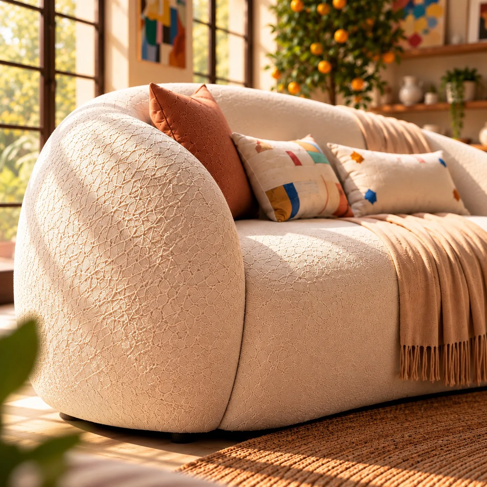

FURNITURE / INDEPENDENT CONCEPT
Comfort, Lived In
A visual story of a curved sofa's form, fabric texture and lived-in comfort in a warm interior.

PROJECT FILM
Feel comfort in motion.
A short promotional film. Playback and sound are in your control.
VISUAL SERIES
One product, different perspectives.



LET'S CREATE TOGETHER
What story could we tell for your product?
Independent concept · No brand collaboration.